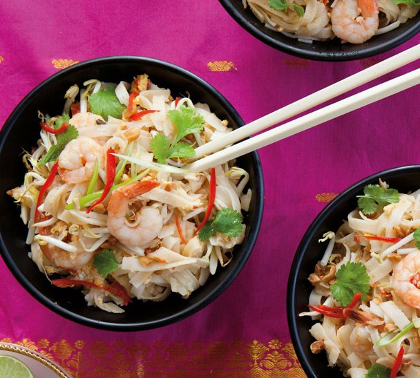

Pad Thai

Description
Pad thai is a snap to make — throw together noodles, eggs, chicken or prawns
and a few veges and you’ve got a family favourite fast food in
less time than it takes to order takeout.
Ingredients
- 400 g dried rice stick noodles
- 1/2 cup Thai sweet chilli sauce
- 1/4 cup fish sauce
- 2 tbsp peanut butter
- 2 tbsp tamarind sauce
- 1/4 cup neutral oul
- 6 garlic cloves, crushed
- 4 red chillies, finely chopped
- 500g chicken breast
- 4 eggs, lightly beaten
- 4 spring onions
- 2 handfuls bean sprouts
- 1 cup roasted peanuts, coarsely chopped
- 2 limes, to serve
Steps
Step One
- Place noodles in a heatproof bowl and cover with boiling water, stirring to fully submerge.
- Allow to soak for 10 minutes, then drain and set aside.
Step Two
- While noodles are soaking, mix chilli sauce, fish sauce, peanut butter and tamarind, if using, and set aside.
- Heat oil in a wok or large frypan and stir-fry garlic, chillies and prawns or chicken over a high heat for 2-4 minutes.
- Add beaten eggs and stir-fry until scrambled and just set.
Step Three
- Lower the heat then add the drained noodles and the chilli sauce mixture.
- Toss for a minute or two over a medium heat to coat.
- Add most of the spring onions, bean sprouts, coriander and peanuts, reserving a little to garnish, and toss over heat for 1 minute.
- Divide between 4 bowls and top with remaining spring onions, bean sprouts, coriander and peanuts.
- Drizzle with lime juice and serve accompanied by extra thai sweet chilli sauce.